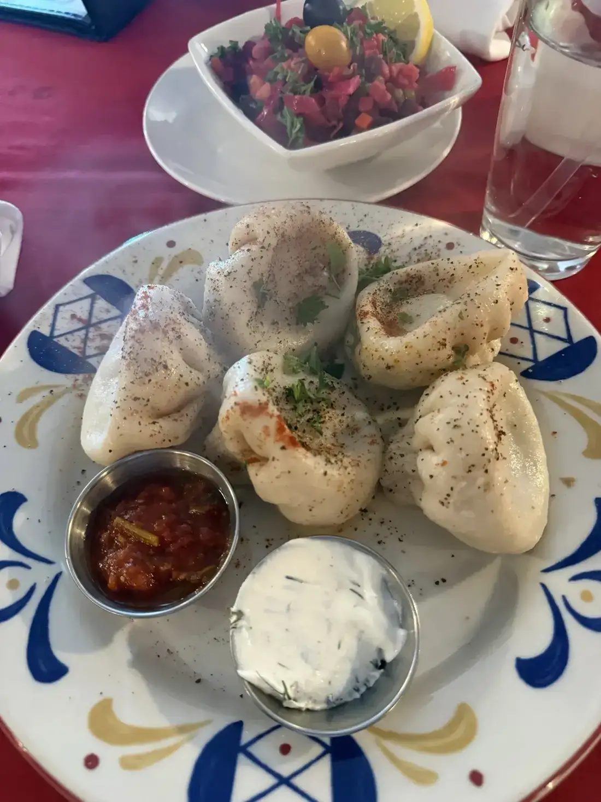
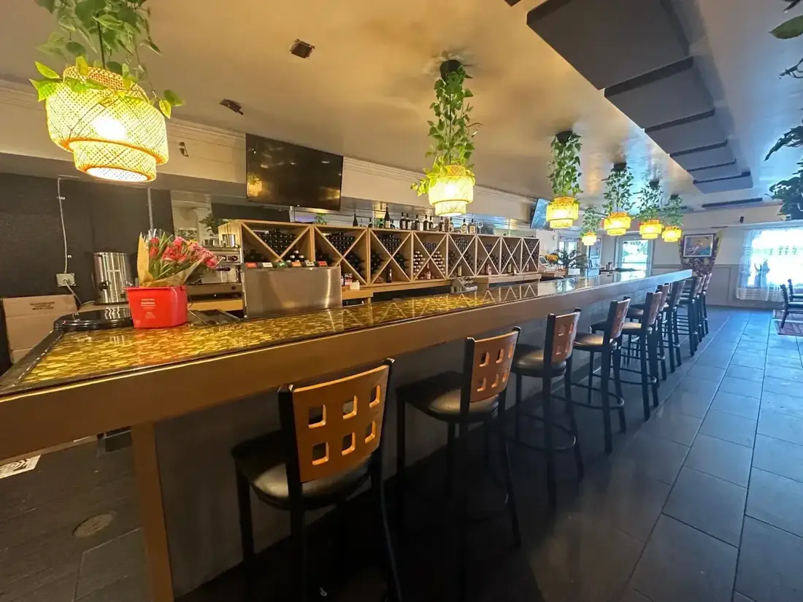
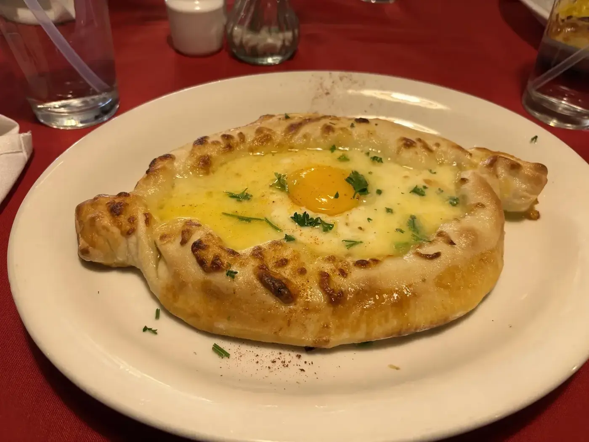
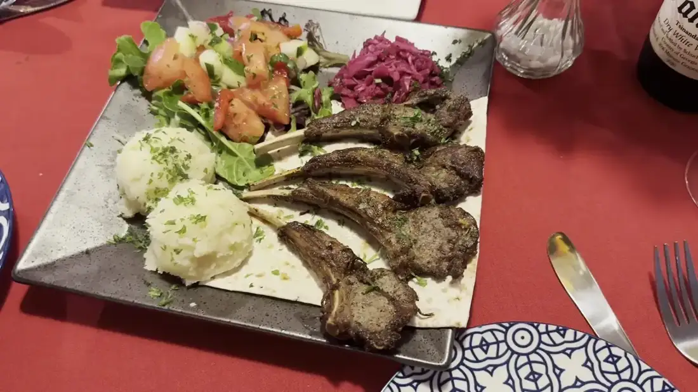
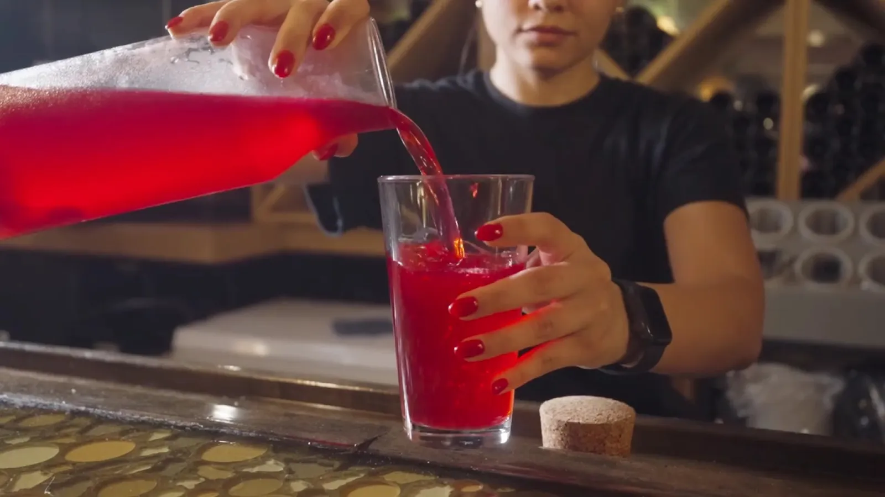
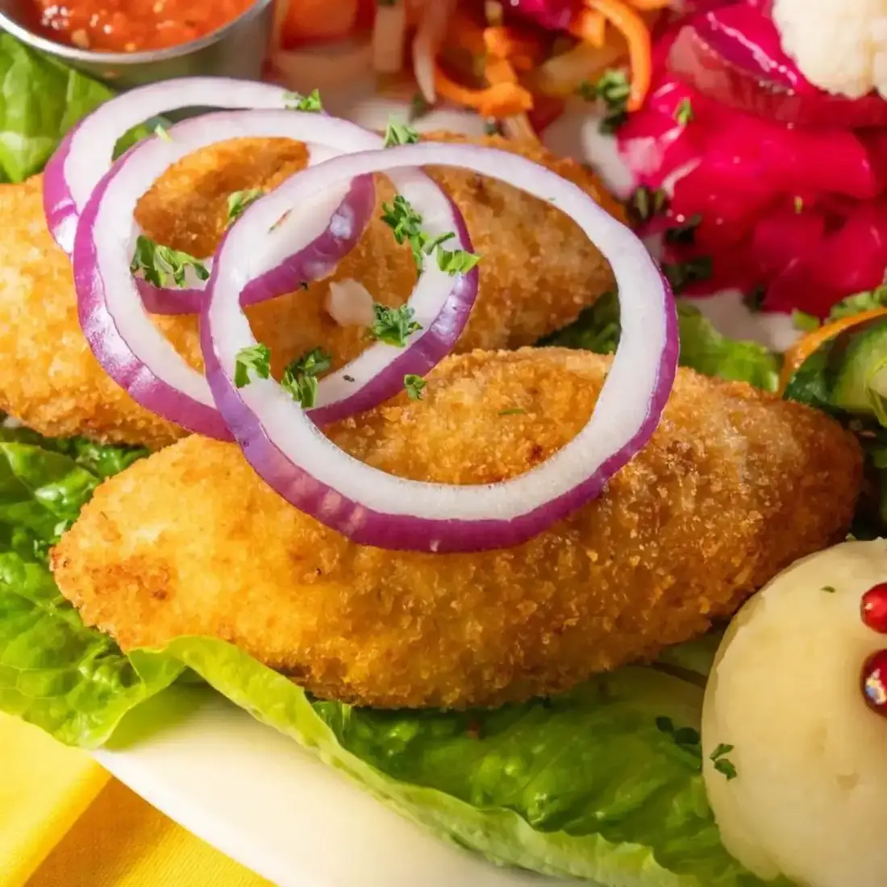
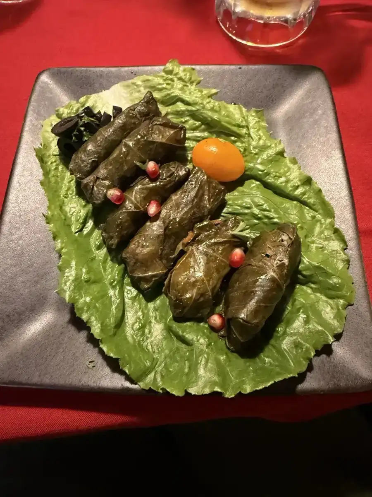
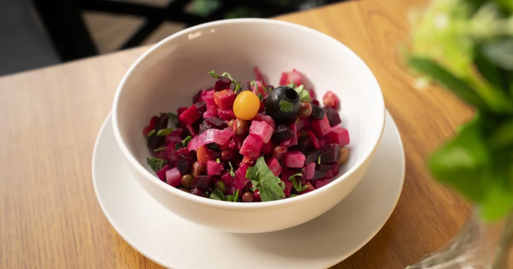
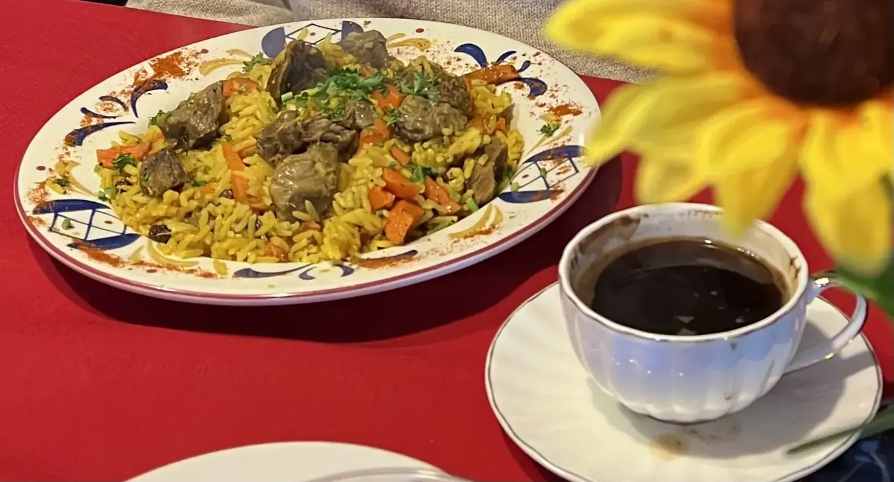
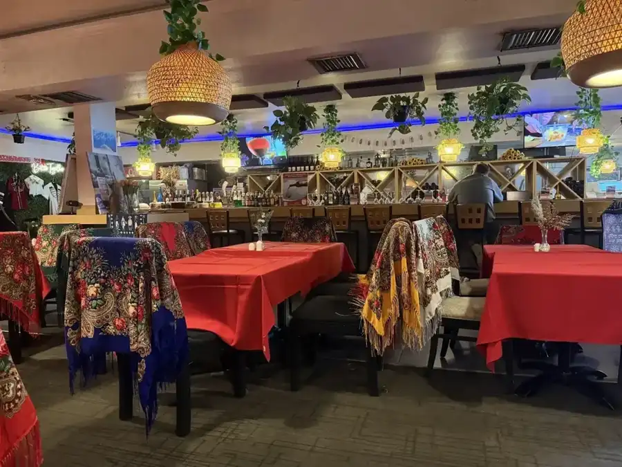

Khinkali
The big Georgian dumplings, filled with ground lamb and beef, onion and herbs.
Georgian · Ukrainian · Tampa, FL

4328 W El Prado Blvd, Tampa, FL 33629
Khinkali, khachapuri and Chicken Kyiv, brought out by a staff that loves explaining the menu.
What guests order
Three plates to start with.

The big Georgian dumplings, filled with ground lamb and beef, onion and herbs.

A boat of baked bread with mozzarella and feta, and an egg on top.

Marinated lamb rack with hand-mashed potatoes, a red special sauce, salad and pickles.





4.9 ★ · 1835 Google reviews
I really enjoyed eating here. The eggplant roulette was my favorite, it had a combination of flavors and textures that were just delicious. Khinkali had that savory flavor that warms the soul. The samsa is just so good. I’ve already made plans to come back and I encourage anyone reading to try this restaurant.
The food here is absolutely authentic. The staff are amazing and so ready to share their culture. If you are looking to try something new or have tried Georgian before and liked it, this is a great place to go.
Delicious Georgian and Ukrainian cuisine in Tampa. Everything was very fresh and delicious and staff was friendly explaining what the dishes were. Didn’t think I would like the beet salad (wife likes beets), but with the walnuts and spices it was great. The Ukrainian stuffed cabbage rolls were flavorful and filling with a lovely carrot dressing. Wife liked her chicken Kiev too. Will be back for sure.

Our story
Dishes of Georgia and Ukraine: khinkali, khachapuri, plov, borscht, vareniki and more. The sign says Ukrainian Georgian cuisine, and the kitchen does both.
Friendly staff who walk you through the menu. A long bar, hanging lamps with trailing plants and red tablecloths.
Visit
4328 W El Prado Blvd, Tampa, FL 33629
Reserve by phone or through OpenTable. Ask about catering and private parties.